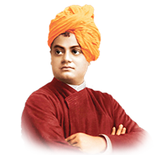

"Arise! Awake!
and do not stop
untill the goal is
reached".
Swami Vivekananda

1863-1902

About Swami Vivekananda
Born Narendranath Datta, Swami Vivekananda (12 January 1863 - 4 July 1902) was an Indian Hindu monk.
Philosopher, writer and religious teacher.He was also Ramakrishna's most important pupil.Swami Vivekanand is
credited with promoting interfaith understanding and elevating Hinduism to the position of a significant international
religion.Swami Vivekananda was a vital player in the introduction of Vedanta and Yoga to the Western world.
After delivering his well-known address at the 1893 Parliament of Religions in Chicago and introducing Hinduism to
Americans with the words "Sisters and brothers of America".Vivekananda gained popularity.Swami Vivekananda
made such an effect at the Parliament that he was called "an orator by divine right and unquestionably the greatest figure at the
Parliament" by an American publication.After having great success at the Parliament, Vivekananda continued to spread the fundamental
principles of Hindu philosophy by giving hundreds of lectures across the United States, England and Europe.Swami Vivekananda also
founded the Vedanta Societies of New York and San Francisco (now as the vedanta Society of Northern California), which served as the
cornerstones for Vedanta Societies in the West.
Made with❤️ by Lokesh Dewangan